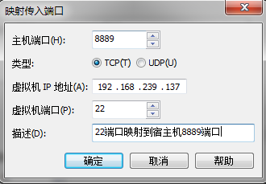
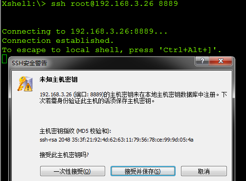

要点
MAC
当我们在使用 VMware fusion NAT 模式时，相当于形成了一个虚拟的局域网 VLAN,这时虚拟机可以对外通信,但是 nat 对外隐藏了内网，外网访问虚拟机的时候就会遇到问题,比如 ping ,ssh 的时候就无法通信,这时我们可以配置外网映射：
1 |
|
Windows
本地 VMware 虚拟机，网络模式为 NAT，现在需要局域网其他电脑通过 ssh 连接这台 VMware 虚拟机
- 宿主机地址：192.168.3.26
- VMware 虚拟机地址：192.168.239.137
- 局域网其他机器地址：192.168.3.204
编辑-虚拟网络编辑器
1、选择 VMnet8 ，点“NAT 设置”
2、添加 “端口映射”，如图，映射物理机 8889 到虚机 22（ssh 端口）

这里需要将宿主机 192.168.3.26 的防火墙关闭或者放行 8889 端口
3、在 192.168.3.204 上通过 xshell 连接 VMware 主机

成功实现 VMware 虚拟机在局域网中任何机器连接。